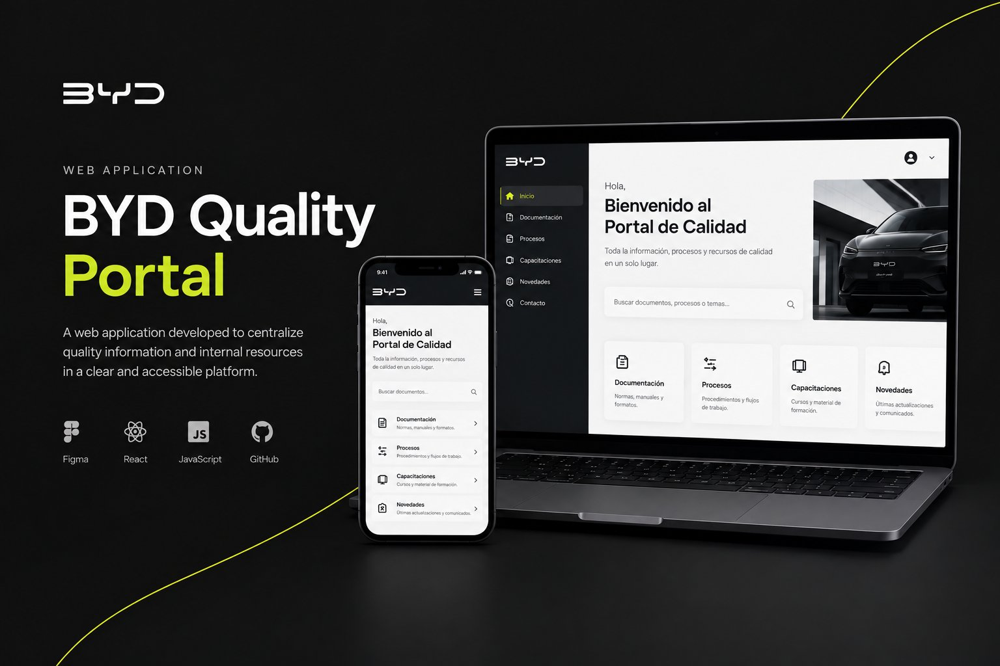
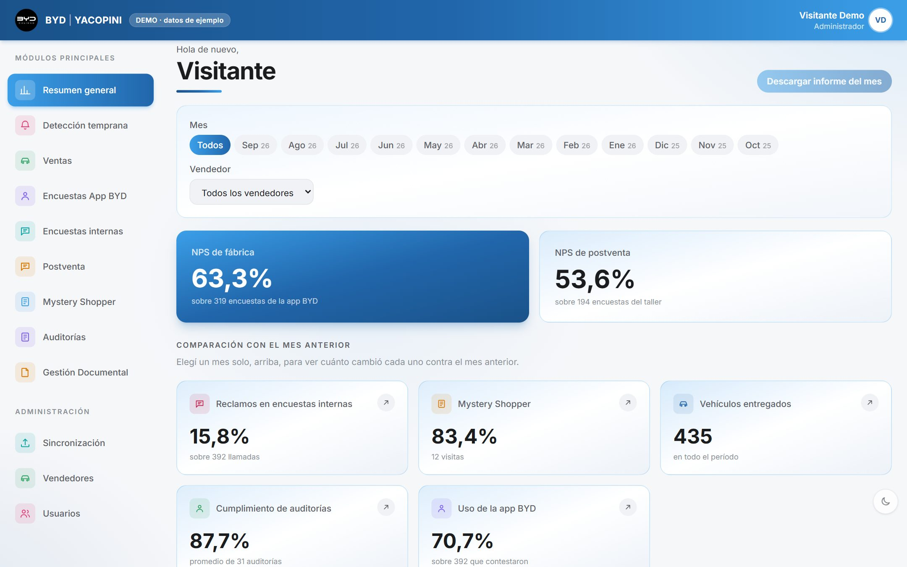
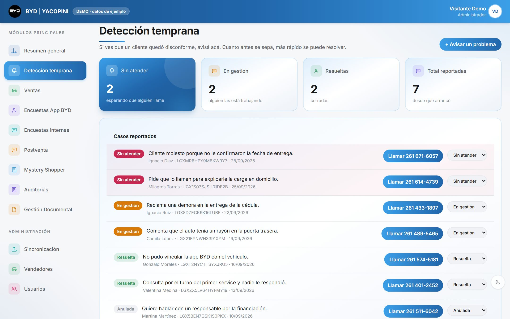
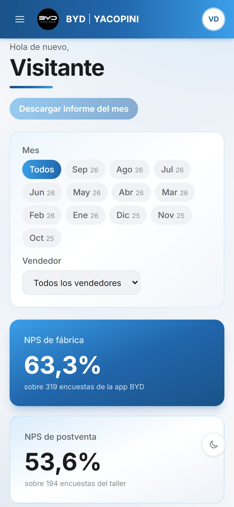
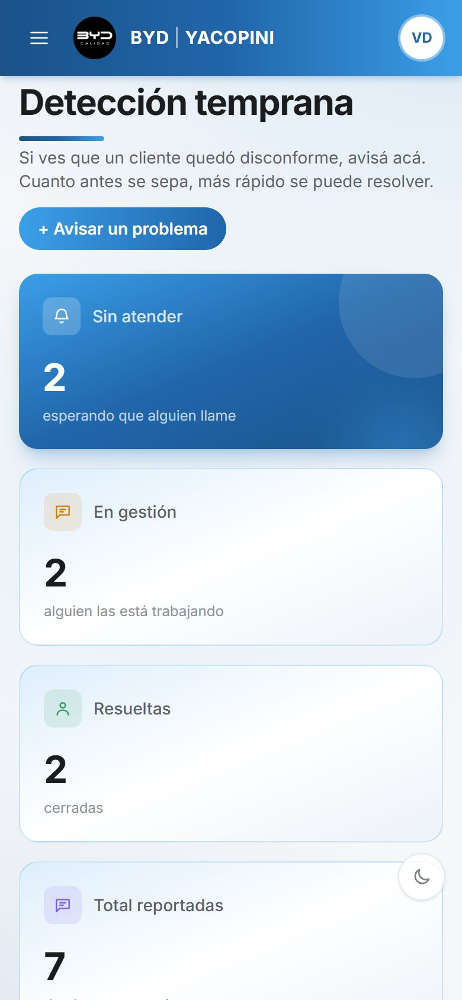
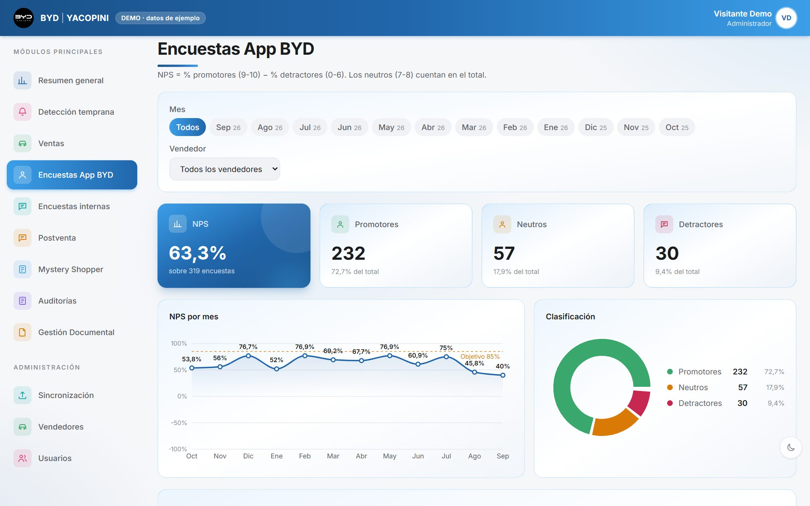
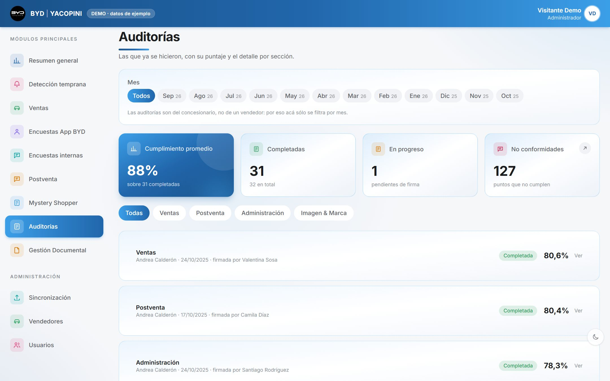
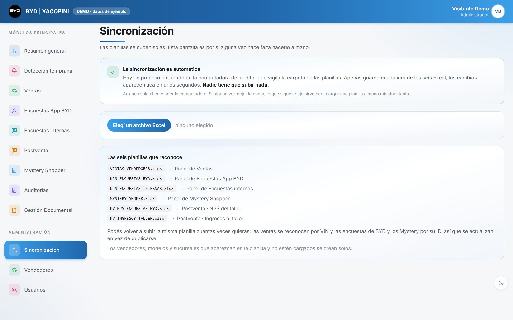

Calidad sin planillas.Quality without spreadsheets.
Diseñé y desarrollé el Portal de Calidad de BYD Yacopini, concesionario oficial en Mendoza: todo lo que había en cuatro tableros de Power BI, en un solo lugar, al día solo y pensado para cada persona del equipo.I designed and built the Quality Portal for BYD Yacopini, an official dealership in Mendoza: everything that lived in four Power BI dashboards, now in one place, always up to date and designed around each person on the team.

Las capturas son de la demo pública, con datos de ejemplo. Los nombres, teléfonos y cifras que aparecen no son reales.Screenshots come from the public demo, with sample data. Names, phone numbers and figures shown are not real.
Cuatro tableros, seis planillas y nadie mirando lo mismo.Four dashboards, six spreadsheets and nobody looking at the same thing.
El equipo de Calidad sigue el NPS que mide fábrica, el NPS del taller, las llamadas del call center, las visitas del Mystery Shopper, las entregas y las auditorías. Cada fuente vivía en su propio Excel y los números se veían en cuatro tableros de Power BI que había que mantener al día a mano.The Quality team tracks the factory NPS, the service NPS, call-center follow-ups, Mystery Shopper visits, deliveries and audits. Each source lived in its own Excel file, and the numbers were shown across four Power BI dashboards that had to be kept up to date by hand.
- Seis planillas de Excel distintasSix separate Excel files
- Cuatro tableros de Power BIFour Power BI dashboards
- Actualizar dependía de una personaUpdating depended on one person
- Un cliente disconforme aparecía en la encuesta semanas después de la entregaAn unhappy customer showed up in the survey weeks after delivery
- Para entonces, el problema ya era más difícil de resolverBy then, the issue was harder to fix
- Las planillas siguen siendo la fuente: no se podía cambiar cómo se carganSpreadsheets remain the source: how they're filled couldn't change
- Usuarios con poco tiempo y desde el celularBusy users, often on their phones
- Cada rol debe ver solo lo que le correspondeEach role must only see what's theirs
Un mismo portal, cinco maneras de usarlo.One portal, five ways to use it.
No es lo mismo la persona de Calidad que revisa todo cada mañana que el vendedor que se entera de un problema en el salón. Diseñé los permisos y las pantallas a partir de qué necesita hacer cada uno.The Quality lead who reviews everything each morning is not the salesperson who hears about a problem on the showroom floor. I designed permissions and screens around what each person needs to do.
| RolRole | Qué necesitaWhat they need | Qué puede hacerWhat they can do |
|---|---|---|
| CalidadQuality | Ver todos los indicadores y actuar rápido sobre los clientes disconformesSee every metric and act fast on unhappy customers | Todo lo operativo; ve todos los sectoresAll operations; sees every area |
| VendedorSalesperson | Avisar de un problema en el momento y seguir su propio desempeñoFlag a problem on the spot and follow their own performance | Solo lo suyo: entregas, NPS y detecciones que cargóOnly their own: deliveries, NPS and reports they filed |
| AuditorAuditor | Registrar auditorías y Mystery ShopperRecord audits and Mystery Shopper visits | Carga y ve resultadosEnters data and sees results |
| GerenciaManagement | Entender cómo viene el mes sin pedir un informeUnderstand how the month is going without asking for a report | Ve todo, no modifica nadaSees everything, changes nothing |
| AdministradorAdmin | Dar de alta a la gente y asignar rolesOnboard people and assign roles | Todo, incluida la gestión de usuariosEverything, including user management |
El problema, en una pregunta.The problem, in one question.
¿Cómo podríamos…?How might we…?¿Cómo podríamos lograr que todo el equipo vea los mismos números, siempre al día, sin que nadie cargue nada a mano, y que un cliente disconforme se atienda antes de que aparezca en una encuesta?How might we get the whole team looking at the same numbers, always up to date, with nobody entering data by hand, and have an unhappy customer handled before they show up in a survey?
Principios de diseñoDesign principles
Nadie carga dos vecesNobody enters data twice
Las planillas que ya se usan son la fuente. El portal se adapta a ellas, no al revés.The spreadsheets already in use are the source. The portal adapts to them, not the other way around.
Cada número, con contextoEvery number in context
Cada indicador dice sobre cuántos casos se calcula y cómo viene contra el mes anterior.Every metric states how many cases it's based on and how it compares with last month.
Lo urgente, primeroUrgent things first
Un cliente disconforme sin atender se ve antes que cualquier gráfico.An unhappy customer nobody has called yet is seen before any chart.
Cinco decisiones que cambiaron el día a día.Five decisions that changed the day-to-day.
Cada una sale de una fricción concreta del equipo.Each one comes from a concrete point of friction for the team.
Actualizar era una tareaUpdating was a chore
Alguien tenía que exportar las planillas y refrescar los tableros. Si no lo hacía, los números quedaban viejos.Someone had to export the spreadsheets and refresh the dashboards. If they didn't, the numbers went stale.
Se actualiza solo al guardar el ExcelIt updates itself when the Excel is saved
Un proceso vigila la carpeta de las planillas y sube los cambios en segundos. Volver a subir un archivo no duplica nada: las ventas se reconocen por VIN y las encuestas por su ID.A background process watches the spreadsheet folder and uploads changes within seconds. Re-uploading a file never duplicates anything: sales are matched by VIN and surveys by their ID.
Un módulo de reclamosA complaints module
El reclamo se registraba cuando el cliente ya lo había dicho en una encuesta, semanas después.A complaint was logged once the customer had already said so in a survey, weeks later.
Detección temprana, desde el celularEarly detection, from the phone
El vendedor que nota a un cliente disconforme lo carga en el momento con nombre y teléfono. Calidad lo ve arriba de todo, lo llama con un toque y lo mueve por estados: sin atender, en gestión, resuelta.The salesperson who notices an unhappy customer logs it on the spot with name and phone. Quality sees it at the top, calls with one tap and moves it through statuses: unattended, in progress, resolved.
Filtrar en cada tableroFiltering on every dashboard
Mirar septiembre en ventas y después en encuestas implicaba volver a elegir el mes.Looking at September in sales and then in surveys meant picking the month again.
Filtros que te siguenFilters that follow you
Mes y vendedor se mantienen al cambiar de pantalla. Se pueden marcar varios meses y los números se suman. El informe en PDF pide un mes solo, porque con varios no queda claro contra qué comparar.Month and salesperson persist across screens. Several months can be selected and the numbers add up. The PDF report asks for a single month, because with several it's unclear what to compare against.
Todos veían todoEveryone saw everything
Compartir un tablero era compartirlo entero, con los resultados de todos los vendedores.Sharing a dashboard meant sharing all of it, including every salesperson's results.
Permisos por rol, en la base de datosRole permissions, in the database
Un vendedor ve solo lo suyo. Cada cuenta nueva no ve nada hasta que Calidad la activa y le asigna un rol. Las reglas viven en la base, no solo en qué botones se muestran.A salesperson only sees their own data. A new account sees nothing until Quality activates it and assigns a role. The rules live in the database, not just in which buttons are shown.
Datos sucios, números dudososMessy data, doubtful numbers
Comentarios escritos en columnas numéricas o vendedores cargados como "Otros" distorsionaban los resultados sin que nadie se diera cuenta.Comments typed into numeric columns, or salespeople entered as "Others", skewed results without anyone noticing.
No adivinar, explicarDon't guess, explain
El portal descarta lo que no entiende en lugar de inventar un valor, y cada indicador muestra sobre cuántos casos se calcula. La guía del equipo explica qué corregir en el Excel para que el número mejore solo.The portal discards what it can't read instead of inventing a value, and every metric shows how many cases it's based on. The team guide explains what to fix in the Excel so the number corrects itself.
Las pantallas que usa el equipo.The screens the team uses.
Capturas de la demo pública, con datos de ejemplo.Screenshots from the public demo, with sample data.







El diseño no termina en la pantalla.Design doesn't end at the screen.
Para que el equipo lo use, escribí una guía corta en el mismo lenguaje del portal: cómo entrar, qué muestra cada pantalla y qué hacer si algo no anda.To get the team using it, I wrote a short guide in the portal's own voice: how to get in, what each screen shows and what to do if something breaks.
Un código QR abre el portal en el celular y tres pasos lo dejan instalado en la pantalla de inicio.A QR code opens the portal on the phone and three steps install it on the home screen.
Cada persona crea su cuenta y Calidad la activa con su rol. Sin planillas de usuarios ni contraseñas compartidas.Each person creates their account and Quality activates it with a role. No user spreadsheets or shared passwords.
Una tabla de "qué ves / qué es" y un archivo que con doble clic dice si la sincronización está andando.A "what you see / what it means" table and a file that, with a double click, tells you whether sync is running.
Lo que cambió.What changed.
Lo que me llevo.What I'm taking away.
- Respetar cómo ya trabaja el equipo bajó la barrera de entrada: nadie tuvo que aprender a cargar datos de otra forma.Respecting how the team already works lowered the barrier: nobody had to learn a new way to enter data.
- Un número sin contexto genera desconfianza: mostrar "sobre cuántos" es parte del diseño.A number without context breeds distrust: showing "out of how many" is part of the design.
- Diseñar los permisos es diseñar la experiencia: lo que alguien no ve también cuenta.Designing permissions is designing the experience: what someone doesn't see matters too.
- Medir cuánto tarda Calidad en llamar a un cliente desde que se reporta.Measure how long Quality takes to call a customer after a report.
- Sumar alertas cuando un indicador cae por debajo del objetivo.Add alerts when a metric drops below target.
- Corregir las planillas de origen junto al equipo para que más respuestas cuenten.Clean up source spreadsheets with the team so more responses count.
Padel Hub Mendoza
Reservas, partidos abiertos y torneos para clubes de pádel: la app del jugador y el panel del club.Bookings, open matches and tournaments for padel clubs: the player app and the club dashboard.